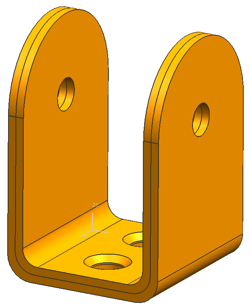

Create a midsurface
Midsurface models are commonly used to simplify the analysis of thin-walled parts.
 Midsurface by Face Pairs (Geometry Preparation group)
Midsurface by Face Pairs (Geometry Preparation group)
-
 the bracket body
the bracket body
-
 Automatically Create Face Pairs
Automatically Create Face Pairs -

-
OK